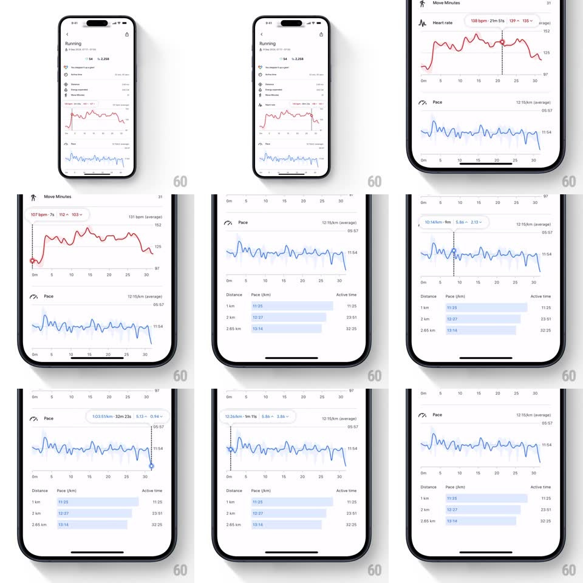

Media
Frame-by-frame

Rebuild this interaction 1:1: Google Fit's workout graph scrub - press and drag across the heart-rate and pace charts to move a dashed crosshair with a precise data dot, a live tooltip reading out values and deltas, and the matching distance-split row highlighting below.

Rebuild this interaction 1:1: Google Fit's workout graph scrub - press and drag across the heart-rate and pace charts to move a dashed crosshair with a precise data dot, a live tooltip reading out values and deltas, and the matching distance-split row highlighting below. ## Integration Integration: stack-agnostic spec - springs given as stiffness/damping, timed motions as duration + curve; map every value to your framework and animation library of choice. ## Scene Workout detail (Running): stats header, red heart-rate line chart, blue pace chart, and a distance-splits table (1 km / 2 km / 2.65 km rows). Scrub state: dashed vertical crosshair, dot on the line, tooltip like "142 bpm - 15m 40s - 151 max / 140 min". ## Motion spec Pattern: crosshair scrub with linked table highlight. - Touch down on a chart: crosshair fades in at the touch x (100ms), dot pops onto the line (scale 0.5 -> 1, 150ms), tooltip springs in above (scale 0.8 -> 1, spring ~420/24, ~180ms). - Drag: crosshair tracks the finger 1:1; the dot rides the line's actual y; tooltip text updates continuously (numbers tick without animation) and flips sides near screen edges (150ms slide). - Scrubbing across a km boundary highlights the matching splits row (light blue fill fades in 150ms, out 150ms) - chart position and table stay in sync. - Lift: crosshair, dot, and tooltip fade out together (200ms); table highlight clears. - Both charts support scrub independently; only one crosshair at a time. ## Calibration - The dot must sit exactly on the data line, interpolating between samples - never floating at finger height. - Tooltip shows value + elapsed time + min/max context; text changes are instant, only its container animates. ## Reduced motion Crosshair and tooltip appear/disappear without scale. ## Don't miss - Heart rate is red, pace is blue - the tooltip text color matches its chart. - The splits table highlight is part of the interaction, not decoration.